| # | Rule | Description |
|---|---|---|
| 1 | The Game | Basketball is played between two teams of five players each, with the goal of shooting the ball through the opponent’s hoop to score points. |
| 2 | Scoring | A field goal inside the three-point line is worth 2 points, beyond the line is worth 3 points, and free throws are worth 1 point each. |
| 3 | Game Duration | A standard game has four quarters, each lasting 12 minutes in the NBA or 10 minutes in international play. |
| 4 | Dribbling | Players must bounce the ball while moving. Picking up the ball and moving without dribbling is called “traveling.” |
| 5 | Shot Clock | Teams have 24 seconds to attempt a shot that hits the rim after gaining possession of the ball. |
| 6 | Fouls | Illegal physical contact (like pushing, holding, or hitting) results in a foul. After a certain number of team fouls, free throws are awarded. |
| 7 | Out of Bounds | If the ball or player with the ball touches the line or goes outside the court, the ball goes to the other team. |
| 8 | Jump Ball | The game begins with a jump ball at center court where two opposing players try to tap the ball to their teammates. |
| 9 | Substitutions | Teams can replace players during stoppages in play, such as fouls, timeouts, or out-of-bounds calls. |
| 10 | Violations | Common violations include traveling, double dribbling, and shot-clock violations. These result in a turnover to the other team. |